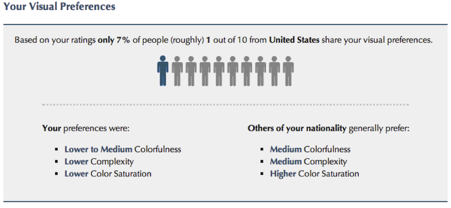

Does your website give a good first impression?
On an individual level we all perceive visual information differently, but how do we as a nation assess a website’s appeal compared to the rest of the world? Lab in the Wild, headed by Professor Kryzysztof Gajos and Dr. Katharina Reinecke, offers short 10 minute online experiments gauging anything from website perception to our ability to predict the future. They periodically post new experiments and take the high-trafficked ones down to run analyses.
The “What is your website aesthetic?” experiment is especially relevant in our global economy, as an increasing number of people all over the world look to the internet for information. But what exactly influences a person’s first impression of a website? The two most noticeable design characteristics at first glance are colorfulness and visual complexity. After answering a set of questions, you get a glimpse into how your visual preferences for colorfulness and complexity align with people of a similar nationality.

Upon collecting and analyzing preliminary data from the experiment, they found that in combination with demographic variables, colorfulness and visual complexity, explains 48% of the variance in users’ first impressions. However, they also noted that visual complexity accounts for a significantly larger amount of variance on ratings of visual appeal than colorfulness. [source]
According to Dr. Reinecke and her colleagues, “Users make lasting judgments about a website’s appeal within a split second of seeing it for the first time. This first impression is influential enough to later affect their opinions of a site’s usability and trustworthiness.” This could have a potentially large impact on a company’s revenue stream if people are immediately clicking away from the website because it is too complex or colorful.
So what is the right amount of color and complexity? According to their analyses, high visual complexity is to be avoided, as it results in the largest decrease in appeal. Whereas there is little differentiation in appeal between sites with low or medium levels of complexity, people responded to both positively. Color, on the other hand, played a less influential role in appeal on the individual level, but varied more by country.
In the above graphic, people from each country rated how colorful they perceived the website to be—China rated it as not very colorful, whereas Germany rated it as very colorful. This is important information if your customer base is primarily international, or if you want to target consumers on a global scale. According to Lab in the Wild’s facebook page, they also found that elderly participants prefer websites with low visual complexity and those with a high education level generally dislike colorful websites.
Apart from the opportunity to gain personalized feedback, taking part in the experiments helps contribute to research that will lead to a greater understanding of users’ web experience, as well as other cogntive perceptions that shape how we interact with technology.